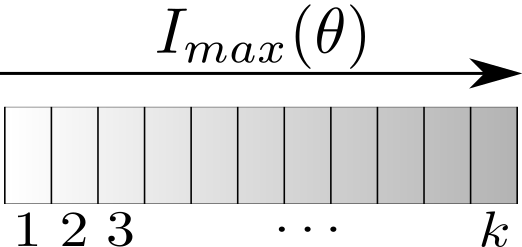
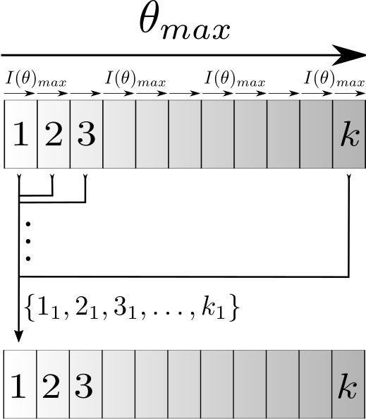

Stratified Selectors#
- Class:
- Class:
- Class:
- Class:
- Class:
- Sources:
Chang & Ying (1999); Chang et al. (2001); Barrada et al. (2006)
Motivation#
Maximum-information selection concentrates exposure on the most discriminating items and leaves much of the bank unused. Stratified selection controls this by splitting the bank into strata and the test into matching stages: early stages, when the ability estimate is still rough, draw from strata of weakly informative items, and the most informative items are kept for the last stages. Within the active stratum the selector still adapts, choosing the item located closest to the current estimate.
The a-stratified method of Chang and Ying (1999) stratifies by discrimination and matches difficulty to the estimate. Item discrimination and difficulty are often positively correlated, so strata formed on \(a\) alone inherit skewed difficulty distributions: early strata lack hard items and late strata lack easy ones, which hurts both precision and exposure balance. The b-blocking refinement of Chang, Qian and Ying (2001) forces every stratum to cover the whole difficulty range before discrimination-based stratification is applied.
The a-stratified method ignores the guessing parameter, both when stratifying and when selecting. Under the 3PL and 4PL models an item’s discrimination does not rank its maximum information, and its information does not peak at \(b\). Maximum-information stratification (MIS) of Barrada et al. (2006) stratifies by the item’s maximum information and matches the ability at which that maximum is reached. MIS-B applies the blocking idea to MIS: it blocks on that ability, so that every stratum covers the whole ability range.
The four selectors share the base class
StratifiedSelector and differ only in the
stratification key, the location matched to the estimate, and whether they block
before stratifying.
Definition#
Let \(M\) be the bank size, \(n\) the test length (test_size) and \(S\) the number
of strata (n_strata, \(1 \le S \le n\)). Each selector defines, for every
item \(i\), a stratification key \(k_i\) and a location \(\ell_i\) on the ability
scale:
Selector |
Method |
\(k_i\) |
\(\ell_i\) |
Blocking |
|---|---|---|---|---|
a-stratified (Chang & Ying, 1999) |
\(a_i\) |
\(b_i\) |
no |
|
a-stratified with b-blocking (Chang et al., 2001) |
\(a_i\) |
\(b_i\) |
on \(b_i\) |
|
MIS (Barrada et al., 2006) |
\(I_i^{\max}\) |
\(\theta_i^{\max}\) |
no |
|
MIS-B (Barrada et al., 2006) |
\(I_i^{\max}\) |
\(\theta_i^{\max}\) |
on \(\theta_i^{\max}\) |
MIS and MIS-B use the ability at which item \(i\) is most informative and its information there:
catsim.irt.max_info_theta() computes \(\theta_i^{\max}\).
Barrada et al. (2006, p. 157, Equations 1 and 2) give \(I_i^{\max}\) and \(\theta_i^{\max}\) in closed form for the 3PL model, with the scaling constant \(D = 1.7\); catsim’s IRT functions use no scaling constant.
Strata without blocking. Items are sorted by increasing \(k_i\) and split into \(S\) contiguous strata of \(\lfloor M/S \rfloor\) items, the first \(M \bmod S\) of them holding one item more. This is the a-stratified procedure of Chang and Ying (1999), as described step by step by Barrada et al. (2006, p. 157).

Fig. 3 AStratSelector: the item bank sorted by increasing \(a\) and split into strata
\(1, \dots, k\).#


Fig. 4 MaxInfoStratSelector: the item bank sorted by increasing \(I_i^{\max}\) and split
into strata \(1, \dots, k\).#
Strata with blocking (Chang et al., 2001; described by Barrada et al., 2006, p. 157). Items are sorted by increasing \(\ell_i\) and grouped into consecutive blocks of \(S\) items. Each block is sorted by increasing \(k_i\); its first item joins the first stratum, its second item the second stratum, and so on. Every full block therefore gives one item to every stratum, so each stratum spans the locations those blocks cover, while the strata still ascend in \(k_i\). A trailing block of \(r < S\) items, those of highest location, gives its items, in the same order, to the first \(r\) strata, so the strata have the sizes they would have without blocking.

Fig. 5 AStratBBlockSelector: items sorted by \(b\) into \(k\) blocks of \(S\) items, each
block sorted by \(a\). The first item of every block, \(\{1_1, 2_1, \dots, k_1\}\),
forms the first stratum, the second items the second stratum, and so on.#


Fig. 6 MaxInfoBBlockSelector: items sorted by \(\theta_i^{\max}\) into \(k\) blocks of \(S\)
items, each block sorted by \(I_i^{\max}\). The first item of every block,
\(\{1_1, 2_1, \dots, k_1\}\), forms the first stratum, the second items the second
stratum, and so on.#
Stages. The test’s positions are split, in order, into \(S\) stages of consecutive positions, sized like the strata: \(\lfloor n/S \rfloor\) positions each, the first \(n \bmod S\) stages one more. With \(q = \lfloor n/S \rfloor\) and \(h = n \bmod S\), the item at 0-indexed test position \(t < n\) is drawn from stratum
Barrada et al. (2006, pp. 157–158) use a bank and a test that divide evenly
into strata; when they do not, catsim gives the extra items and positions to
the first strata and stages. A test of at most \(M\) items (\(n \le M\)) then
never needs more items from a stratum than the stratum holds, so a session
without excluded items administers all \(n\) items. There is no stage for
position \(n\) or later: asked for an item there, the selector raises
ValueError.
Selection. Within the active stratum, the selector takes the item whose location is closest to the estimate (Barrada et al., 2006, p. 157). With \(R_t\) the items neither administered nor excluded,
The strata depend only on the item parameters, so every session of a run uses the same strata.
Parameters#
Parameter |
Default |
Description |
|---|---|---|
|
required |
Intended test length \(n\), at least 1. The stopper must end the
test by then: the selector raises |
|
|
Number of strata \(S\), between 1 and |
Behavior and Comparison#
Under the 1PL and 2PL models \(\theta_i^{\max} = b_i\) and \(I_i^{\max}\) ranks items like \(a_i\), so MIS coincides with the a-stratified method.
MIS improved precision over the a-stratified method in Barrada et al. (2006, pp. 158–159). They also found that blocking reduced the skewness of the exposure rates both with and without correlation between \(a\) and \(b\), and recommended MIS-B whenever a stratified method is used.
Guarantees#
The strata, which
strata(item_bank)returns, partition the bank and ascend in the stratification key; with blocking, every block ofn_strataitems ordered by location gives its items, in order of key, one to each stratum, so every stratum spans the bank’s range of locations.Each item comes from the stratum of its stage, which depends only on the number of administered items,
test_sizeandn_strata: the first stages draw from the strata of lowest key, the last stage from the highest.The returned item is the remaining item of the active stratum whose location is closest to the estimate; it is never an item already administered or excluded.
If the active stratum has no remaining items, the selector raises
NoItemsAvailableError.With
n_strata <= test_size <= n_items, no stage needs more items than its stratum holds, so a session without excluded items administerstest_sizeitems.Asked for an item once
test_sizeitems have been administered, the selector raisesValueErrornaming both numbers, so a stopper that allows longer tests thantest_sizefails loudly rather than end sessions as if the bank were exhausted.It applies no exposure cap: the run’s exposure rates do not change its choice. The strata are its exposure control.
References#
Chang, H.-H., & Ying, Z. (1999). A-stratified multistage computerized adaptive testing. Applied Psychological Measurement, 23(3), 211-222. https://doi.org/10.1177/01466219922031338. Not openly available; Barrada et al. (2006) describe the method.
Chang, H.-H., Qian, J., & Ying, Z. (2001). A-stratified multistage computerized adaptive testing with b blocking. Applied Psychological Measurement, 25(4), 333-341. https://doi.org/10.1177/01466210122032181. Not openly available; Barrada et al. (2006) describe the method.
Barrada, J. R., Mazuela, P., & Olea, J. (2006). Maximum information stratification method for controlling item exposure in computerized adaptive testing. Psicothema, 18(1), 156-159. https://www.psicothema.com/pdf/3191.pdf (open access).
API Reference#
- class catsim.selection.StratifiedSelector(test_size: int, n_strata: int | None = None)[source]#
Bases:
BaseSelectorAbstract base class for selectors that divide the item bank into stage-aligned strata.
The bank is sorted by a stratification key and split into
n_stratastrata, optionally after blocking on a location key so that every stratum covers the whole ability range. The test is split inton_strataconsecutive stages, and each stage draws from its own stratum the non-administered item whose location is closest to the current ability estimate. The strata are its exposure control: it applies no exposure cap and ignorescontext.exposure_rates.- Parameters:
- test_sizeint
Number of items in the test, at least 1. The selector raises
ValueErrorwhen asked for an item past it, so the stopper must end the test by then.- n_strataint or None, optional
Number of strata (and test stages). Must be between 1 and
test_size. Default is None, which uses one stratum per test item.
- Raises:
- TypeError
If
test_sizeorn_stratais not an integer.- ValueError
If
test_sizeis smaller than 1 orn_stratais not between 1 andtest_size.
Notes
For full family-level details, see Stratified Selectors.
- select(context: StepContext) int[source]#
Return the available item of the current stage’s stratum whose location is closest to the estimate.
- Parameters:
- contextStepContext
The session to select for.
- Returns:
- int
Index of the selected item.
- Raises:
- NoItemsAvailableError
If every item in the current stratum has been administered or excluded.
- ValueError
If
test_sizeitems have already been administered.
- strata(item_bank: ItemBank) list[NDArray[integer[Any]]][source]#
Return the item indices of each stratum, from the first test stage to the last.
The strata ascend in the stratification key; with blocking, every stratum spans the range of the blocking key. The strata are computed once per item bank.
- Parameters:
- item_bankItemBank
An ItemBank containing item parameters.
- Returns:
- list[numpy.ndarray]
One array of item indices per stratum.
- class catsim.selection.AStratSelector(test_size: int, n_strata: int | None = None)[source]#
Bases:
StratifiedSelectorImplementation of the \(\alpha\)-stratified selector [Chang and Ying, 1999].
- Parameters:
- test_sizeint
The number of items the test contains.
- n_strataint or None, optional
Number of strata. Default is None, which uses
test_sizestrata.
Notes
For full algorithmic details, see Stratified Selectors.
- class catsim.selection.AStratBBlockSelector(test_size: int, n_strata: int | None = None)[source]#
Bases:
AStratSelectorImplementation of the \(\alpha\)-stratified selector with \(b\) blocking [Chang et al., 2001].
- Parameters:
- test_sizeint
The number of items the test contains.
- n_strataint or None, optional
Number of strata. Default is None, which uses
test_sizestrata.
Notes
For full algorithmic details, see Stratified Selectors.
- class catsim.selection.MaxInfoStratSelector(test_size: int, n_strata: int | None = None)[source]#
Bases:
StratifiedSelectorImplementation of the maximum information stratification (MIS) selector [Barrada et al., 2006].
- Parameters:
- test_sizeint
The number of items the test contains.
- n_strataint or None, optional
Number of strata. Default is None, which uses
test_sizestrata.
Notes
For full algorithmic details, see Stratified Selectors.
- class catsim.selection.MaxInfoBBlockSelector(test_size: int, n_strata: int | None = None)[source]#
Bases:
MaxInfoStratSelectorImplementation of the maximum information stratification with blocking (MIS-B) selector [Barrada et al., 2006].
- Parameters:
- test_sizeint
The number of items the test contains.
- n_strataint or None, optional
Number of strata. Default is None, which uses
test_sizestrata.
Notes
For full algorithmic details, see Stratified Selectors.